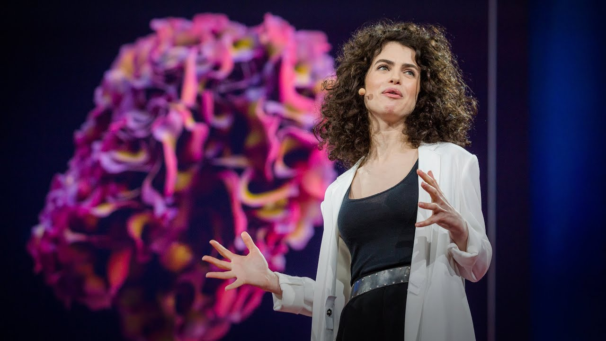
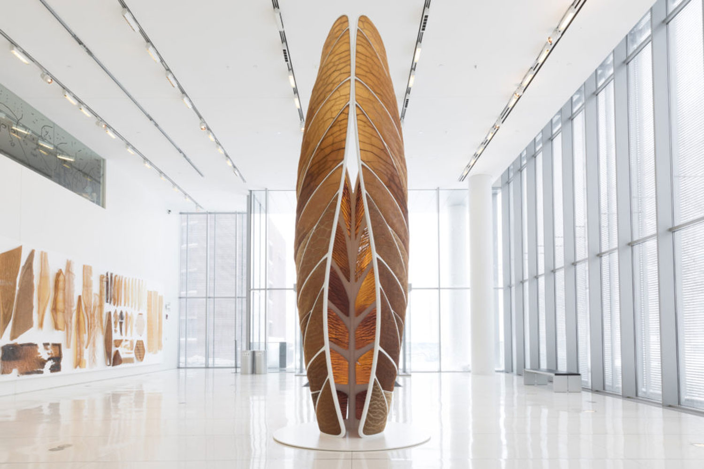
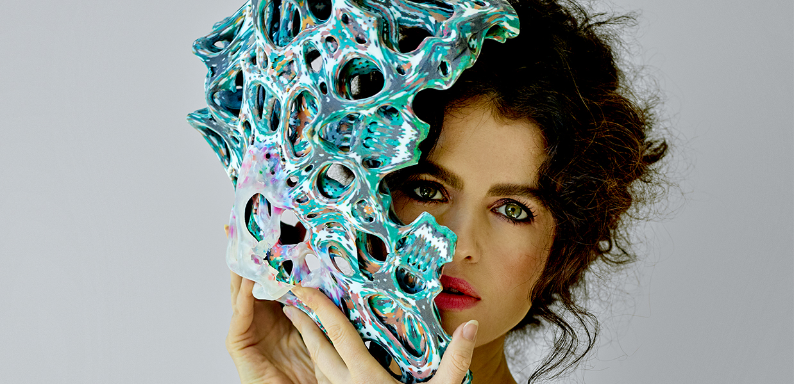

Arquitecta, diseñadora y profesora de Artes y ciencias de los Medios en el Mit Media Lab, donde fundó y actualmente dirige el grupo de investigación Mediated Matter. Su trabajo se enfoca en la intersección entre el diseño computacional, la fabricación digital, la biología sintética y la ciencia de los materiales, utilizando estos conocimientos para abordar el diseño en múltiples disciplinas, dimensiones y escalas.
Obtuvo su doctorado en Computación de Diseño como Presidential Fellow en el MIT, donde acuñó el término Ecología de Materiales para describir su campo de investigación. Sus estudios abarcan diversas áreas, como el diseño arquitectónico, el diseño de productos, el diseño de moda y el diseño de nuevas tecnologías para la fabricación digital. El objetivo principal de su trabajo es fortalecer la relación entre los entornos construidos, naturales y biológicos, utilizando principios de diseño que se inspiran y derivan de la propia naturaleza, y aplicándolos en la creación de nuevas tecnologías de diseño.
El enfoque innovador de Oxman en el diseño sostenible y la integración de la naturaleza en la arquitectura le ha otorgado múltiples reconocimientos y alcance a nivel internacional. Entre ellos se destacan el premio Graham Foundation Carter Manny (2008), el premio METROPOLIS Next Generation (200), el premio BSA Women in Design (2014), el premio Innovation by Design de Fast Company (2015), entre otros.
OTROS PROYECTOS
Materiales biológicos logran una nueva forma de construir que utilice materia orgánica como bloques de construcción. Esto representa una reconfiguración radical de cómo fabricamos, usamos y desechamos edificios, un concepto que llama ecología material.
 Ver másEstructura de biopolímero fabricado a base de caparazones de crustáceos y agua. Puede cambiar su forma y color. Membranas impresas en 3D. Cuando se degrada, aporta nutrientes a la vida marina, soluble al contacto con el agua, enriquece microorganismos del suelo y favorece la polinización.
 Ver más